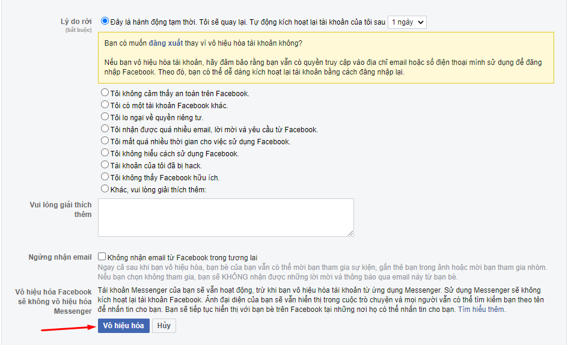
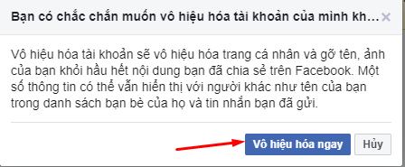

Hướng dẫn cách xóa tài khoản Facebook tạm thời và vĩnh viễn

Ty Nguyen
CEO ❤️ AhaChat. Love babies & chatbot.
Facebook hiện đang là mạng xã hội lớn nhất thế giới. Tuy nhiên nếu bạn cảm thấy việc lướt Facebook quá nhàm chán, gây mất nhiều thời gian của bạn và bạn quyết định muốn từ bỏ tài khoản Facebook. Vậy làm thế nào để xóa tài khoản Facebook tạm thời hoặc vĩnh viễn? Bài viết dưới đây sẽ giải đáp điều đó giúp bạn, đừng bỏ lỡ nhé!
1. Cách xoá tài khoản Facebook vĩnh viễn hoặc tạm thời trên máy tính
Để xoá vĩnh viễn tài khoản Facebook trên máy tính, bạn làm theo các bước hướng dẫn sau:
- Bước 1: Truy cập vào website Facebook trên máy tính, đăng nhập vào tài khoản Facebook bạn muốn xoá vĩnh viễn. Click chuột vào biểu tượng Tam giác ngược ở góc phải màn hình rồi chọn mục Cài đặt & quyền riêng tư
- Bước 2: Tiếp theo, chọn mục Cài đặt (Settings)
- Bước 3: Tại giao diện của mục Cài đặt (Settings), chọn mục Thông tin của bạn trên Facebook (Your Facebook Information) ở menu bên trái. Sau đó chọn tính năng Vô hiệu hoá và xoá ở mục cuối cùng bên phải
- Bước 4: Xuất hiện bảng thông báo, tại đây có 2 trường hợp cho bạn lựa chọn:
Trường hợp 1: Xoá/ khóa tài khoản Facebook vĩnh viễn
- Nếu bạn muốn xoá tài khoản vĩnh viễn bạn tích chọn vào ô Xóa vĩnh viễn tài khoản. Sau khi tích chọn xong, bạn click chuột vào ô Tiếp tục xoá tài khoản. Nếu đến đây mà bạn không muốn khoá tài khoản Facebook của bạn nữa thì bấm Huỷ
- Sau khi bạn bấm chọn Tiếp tục xoá tài khoản, xuất hiện bảng thông báo về xoá tài khoản vĩnh viễn. Tại đây, có các mục cho bạn lựa chọn, bạn có thể chỉ vô hiệu hoá tạm thời, có thể tải xuống các thông tin mà bạn đã đăng tải lên Facebook đó.
Nếu không muốn chỉnh sửa thông tin gì nữa, bạn bấm vào Xóa tài khoản
- Tiếp theo, xuất hiện bảng xác nhận tài khoản trước khi xóa vĩnh viễn, tại đây bạn nhập mật khẩu của tài khoản Facebook mà bạn muốn xoá và chọn Tiếp tục
- Lúc này, xuất hiện ô thông báo về xác nhận xóa tài khoản vĩnh viễn. Nội dung của bảng thông báo này chính là trong vòng 30 ngày nếu bạn không kích hoạt lại tài khoản thì tài khoản Facebook của bạn sẽ bị xóa vĩnh viễn, và ngược lại. Cuối cùng, bấm chọn Xoá tài khoản
Như vậy là bạn đã khoá tài khoản Facebook vĩnh viễn trên máy tính thành công rồi nhé. Nếu bạn muốn lấy lại tài khoản thì trong vòng 30 ngày hãy đăng nhập lại vào tài khoản đó. Còn quá thời gian 30 ngày thì tài khoản của bạn sẽ bị Facebook xóa vĩnh viễn mà không thể khôi phục lại được nữa.
Trường hợp 2: Xoá/ khóa tài khoản Facebook tạm thời
- Nếu bạn muốn chỉ xoá tài khoản tạm thời thì bạn tích chọn vào ô Vô hiệu hoá tài khoản. Sau khi đã tích chọn vào tính năng bạn muốn thực hiện, bạn click chuột vào Tiếp tục vô hiệu hoá tài khoản. Trường hợp thực hiện đến đây mà bạn không muốn thực hiện xóa tài khoản Facebook của bạn nữa thì có thể bấm Huỷ
- Sau khi bấm vào Tiếp tục vô hiệu hoá tài khoản, xuất hiện thông báo, tại đây bạn tích chọn vào lý do rời từ Facebook đưa ra, sau đó bấm Vô hiệu hoá

- Sau khi bấm Vô hiệu hoá, xuất hiện thông báo bạn có chắc chắn muốn vô hiệu hoá tài khoản của bạn hay không. Nếu bạn muốn vô hiệu hoá thì bạn bấm vào Vô hiệu hoá ngay

- Cuối cùng, tài khoản của bạn sẽ có thông báo đã bị vô hiệu hoá sau khi bạn bấm vào Vô hiệu hoá ngay.
Như vậy là bạn đã xoá tài khoản Facebook tạm thời trên máy tính thành công, sẽ không có ai có thể tìm được facebook của bạn trong thời gian khóa tạm thời. Nếu bạn muốn quay trở lại chỉ cần đăng nhập vào như bình thường.
2. Cách xoá/khóa tài khoản Facebook tạm thời hoặc vĩnh viễn trên điện thoại di động
Với những người không muốn đăng nhập Facebook từ web mà muốn thực hiện ngay trên điện thoại di động thì bạn thực hiện theo các bước hướng dẫn sau:
- Bước 1: Đăng nhập vào Facebook từ ứng dụng trên điện thoại, có biểu tượng chữ “f” màu trắng nền xanh.
- Bước 2: Đăng nhập vào tài khoản Facebook cá nhân của bạn, khi đăng nhập xong giao diện trang chủ của Facebook xuất hiện. Lúc này bạn bấm chọn biểu tượng 3 gạch ngang ở góc phải phía dưới màn hình.
- Bước 3: Tiếp theo, bạn bấm chọn mục Cài đặt & quyền riêng tư rồi chọn Cài đặt
- Bước 4: Sau khi bấm vào Cài đặt giao diện cài đặt xuất hiện, bạn kéo xuống tìm mục Thông tin của bạn trên Facebook và bấm chọn vào mục Quyền sở hữu và kiểm soát tài khoản
- Bước 5: Tại giao diện Quyền sở hữu và kiểm soát tài khoản, bạn bấm chọn mục Vô hiệu hoá và xoá
- Bước 6: Khi giao diện Vô hiệu hoá và xoá xuất hiện, cũng giống như trên máy tính, tại đây có 2 trường hợp là Vô hiệu hoá tài khoản và Xóa tài khoản.
Trường hợp 1: Vô hiệu hoá Facebook tạm thời (khóa tài khoản tạm thời)
- Nếu bạn chỉ muốn khoá tài khoản tạm thời, bạn tích vào ô Vô hiệu hoá tài khoản, sau đó bấm Tiếp tục vô hiệu hoá tài khoản
- Sau khi bấm vào Tiếp tục vô hiệu hoá tài khoản, Facebook sẽ yêu cầu bạn nhập mật khẩu tài khoản FaceBook vì lý do bảo mật rồi bấm Tiếp tục
- Lúc này xuất hiện thông báo vô hiệu hoá tài khoản, bạn tích chọn vào lý do mà Facebook đưa ra, sau đó bấm Tiếp tục
- Sau khi xử lý các yêu cầu mà Facebook đưa ra, tài khoản của bạn sẽ bị vô hiệu hoá tạm thời.
Khi tài khoản bị vô hiệu hoá sẽ không có bất kỳ thông tin của bạn nào có thể tìm kiếm được trên Facebook. Bạn chỉ cần đăng nhập lại Facebook là có thể quay trở lại Facebook bất cứ lúc nào nếu bạn muốn.
Trường hợp 2: Xoá/ khóa tài khoản Facebook vĩnh viễn
Nếu bạn muốn xoá vĩnh viễn tài khoản Facebook cá nhân của bạn, bạn tích chọn vào ô Xóa tài khoản rồi bấm chọn Tiếp tục xoá tài khoản.
- Trước khi có thông báo xoá tài khoản vĩnh viễn, Facebook sẽ đưa ra một số câu hỏi vì sao bạn muốn xóa tài khoản Facebook vĩnh viễn cũng như nếu cần tải các thông tin mà bạn đã đăng tải trên Facebook cá nhân.
Cuối cùng, bạn bấm chọn xoá tài khoản thì tài khoản của bạn sẽ được xoá vĩnh viễn.
Bài viết trên đây đã hướng dẫn cho bạn cách xoá tài khoản Facebook tạm thời và vĩnh viễn trên cả máy tính và điện thoại. Nếu bạn có bất kỳ thắc mắc gì cần hỗ trợ thì đừng quên để lại góp ý ngay mục bình luận dưới đây, chúng tôi sẽ phản hồi bạn trong thời gian sớm nhất. Chúc các bạn thành công!